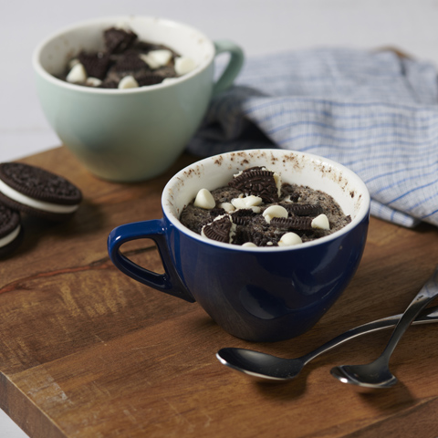
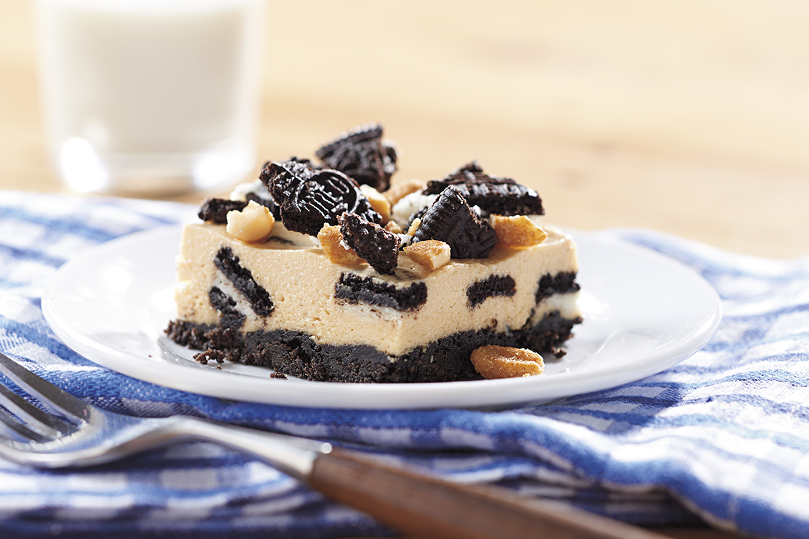
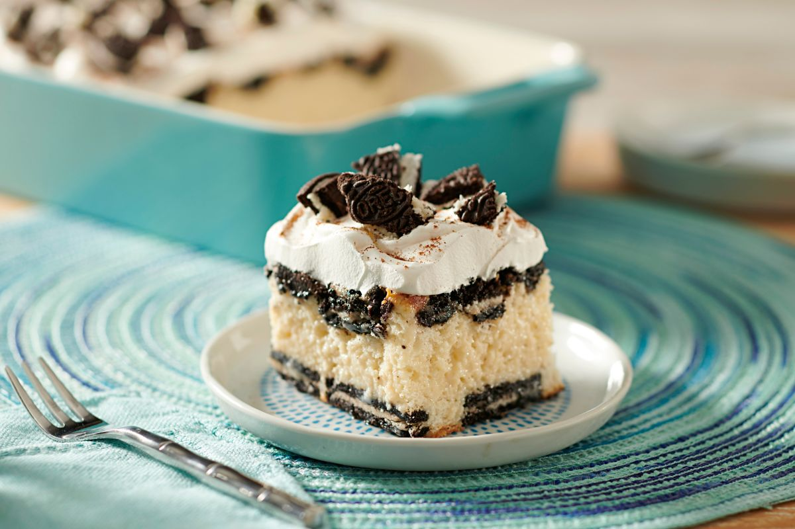

OREO Black & White Mug Cakes
Ingredients:
- 4 OREO Cookies, divided
- 1/4 cup flour
- 2 Tbsp. sugar
- 1/4 tsp. baking powder
- 1/4 cup milk
- 1 Tbsp. butter, melted
- 16 (about 2 tsp.) white chocolate chips
Steps:
- Chop 1 cookie; reserve for later use.
- Crush remaining cookies coarsely; place in medium bowl. Add flour, sugar and baking powder; mix well. Stir in milk and butter.
- Spoon batter evenly into 2 (6-oz.) microwaveable mugs sprayed with cooking spray; top evenly with reserved chopped cookie and chocolate chips.
- Microwave on HIGH 1 min. 15 sec. or until tops of cakes look done. Remove from microwave. Let stand 1 min.

OREO & Peanut Butter "Cookie Dough" Cheesecake
Ingredients:
- 36 OREO Cookies , divided
- 3 Tbsp. butter , melted
- 2 pkg. (8 oz. each) cream cheese , softened
- 1 cup creamy peanut butter
- 1 cup powdered sugar
- 1 tsp. vanilla
- 1.5 cups thawed frozen whipped topping
- 0.25 cup honey-roasted peanuts , chopped
Steps:
- Heat oven to 350ºF.
- Line 13x9-inch pan with foil, with ends of foil extending over sides;
spray with cooking spray. Crush 18 cookies finely; mix with butter. Press onto bottom of prepared pan.
- Bake 6 to 8 min. or until lightly browned. Cool completely.
- Beat cream cheese, peanut butter, sugar and vanilla in large bowl with mixer until blended.
Gently stir in whipped topping.
- Chop remaining cookies. Reserve 3/4 cup chopped cookies; stir remaining cookies into cream cheese mixture.
Spread onto bottom of crust; top with nuts and reserved cookies.
- Refrigerate 3 hours. Use foil handles to remove cheesecake from pan before cutting to serve.

OREO Tres Leches Cake
Ingredients:
- 36 OREO Cookies , divided
- 1 pkg. (2-layer size) white cake mix
- 1 can (14 oz.) sweetened condensed milk
- 1 can (12 oz.) evaporated milk
- 0.25 cup whole milk
- 3 cups thawed frozen whipped topping
- 0.5 tsp. ground cinnamon
Steps:
- Heat oven to 350ºF.
- Place 24 cookies, in 4 rows of 6 cookies each, in 13x9-inch pan sprayed with cooking spray. Chop remaining cookies.
- Prepare cake batter as directed on package; pour
over cookies in prepared pan. Sprinkle with half the chopped cookies.
- Bake as directed on package for 13x9-inch cake; cool completely.
- Pierce cake with large fork at 1/2-inch intervals. Mix milks until blended;
pour slowly and evenly over cake. Cover.
- Refrigerate 1 to 2 hours or until all liquid is absorbed.
- Frost cake with whipped topping; sprinkle with cinnamon. Top with remaining chopped cookies.
Home